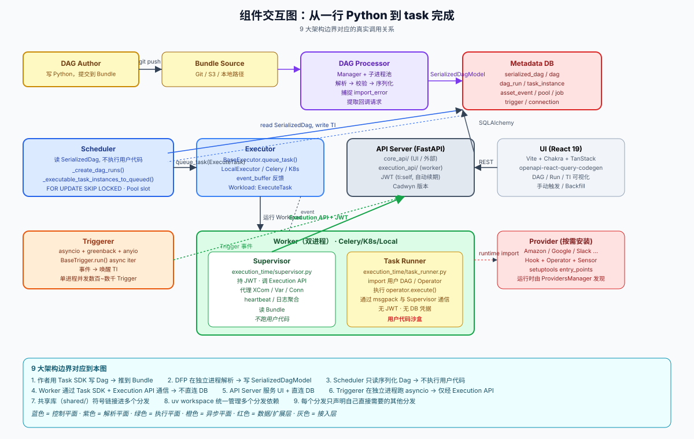
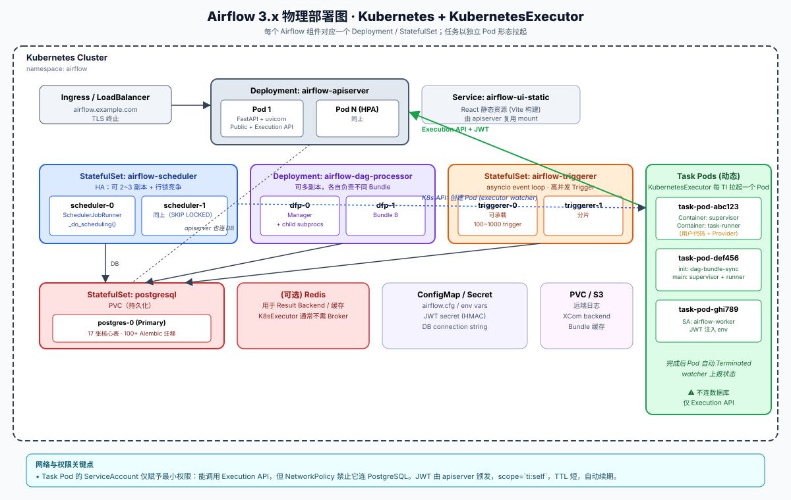
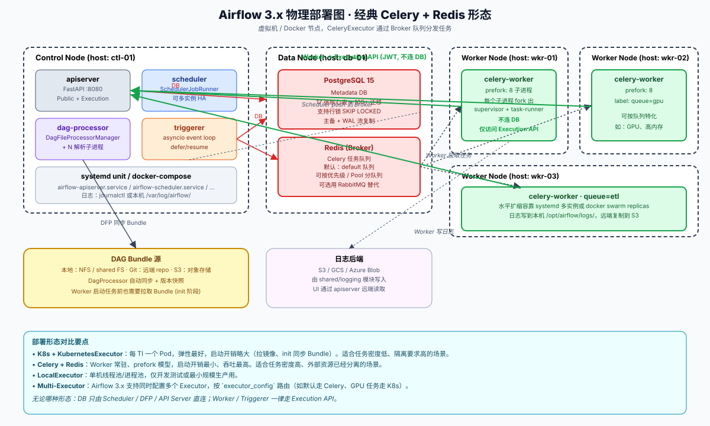
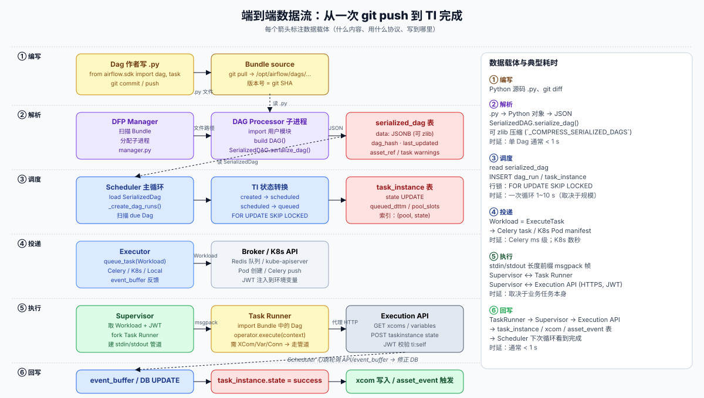
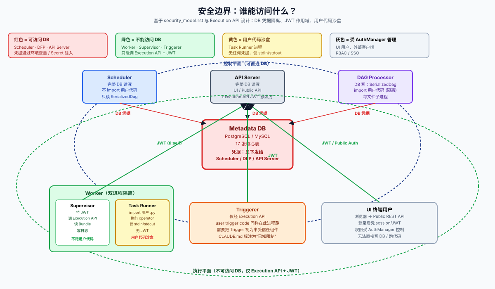

01 · 整体架构与组件交互
本篇把 Airflow 3.x 当作一栋"建筑"来看：9 大架构边界是承重墙、5 类主进程是楼层、Metadata DB 是地基、Execution API 是隔离玻璃。读完本篇您能：(1) 在任何运维场景下画出物理部署图，(2) 解释为什么 Scheduler 不能跑用户代码，(3) 分辨 Public REST API 与 Execution API。
1.1 9 大架构边界（逐条展开）
CLAUDE.md 的 Architecture Boundaries 一节定义了 9 条边界。下面我们逐条结合源码展开，并指出每条边界对应"读哪些代码就能验证"。
1.1.1 用户用 Task SDK 写 Dag
Users author DAGs with the Task SDK (
airflow.sdk).
含义：从 3.x 起，Dag 作者只应当从 airflow.sdk 命名空间导入抽象（DAG、task、dag、Asset、TaskGroup、XComArg 等）。airflow.* 内部模块对 Dag 作者来说是"实现细节"。
对应源码：
task-sdk/src/airflow/sdk/__init__.py定义公共导出task-sdk/src/airflow/sdk/definitions/dag.py—DAG类task-sdk/src/airflow/sdk/definitions/decorators/__init__.py—@dag、@task、@task_grouptask-sdk/src/airflow/sdk/bases/operator.py—BaseOperatortask-sdk/src/airflow/sdk/definitions/xcom_arg.py— XCom 透传机制
为什么这是边界：把 SDK 与 airflow-core 拆开后，理论上一个 Dag 文件只依赖 task-sdk 这一个轻量分发即可解析、测试，甚至单独打包跑在远端环境。
1.1.2 DAG Processor 独立解析，写 SerializedDagModel
Dag File Processor parses Dag files in separate processes and stores serialized Dags in the metadata DB.
含义：用户 Python 代码的解析（import xxx、构造 DAG 对象）只发生在 DFP 进程。DFP 把结果序列化为 JSON 写入 serialized_dag 表。
对应源码：
airflow-core/src/airflow/dag_processing/manager.py—DagFileProcessorManager，管理子进程池airflow-core/src/airflow/dag_processing/processor.py—DagFileProcessorProcess，单个 Dag 文件的解析进程airflow-core/src/airflow/dag_processing/collection.py—update_dag_parsing_results_in_db()，批量原子写入airflow-core/src/airflow/models/serialized_dag.py—SerializedDagModelairflow-core/src/airflow/jobs/dag_processor_job_runner.py—DagProcessorJobRunner，将 DFP 包装成可被airflow dag-processor命令拉起的 Job
软件守卫：CLAUDE.md 明确写：
Software guards prevent individual parsing processes from accessing the database directly and enforce use of the Execution API, but these guards do not protect against intentional bypassing by malicious or misconfigured code.
也就是说，DFP 子进程在设计上走 Execution API（而不是直连 DB），但目前并没有像 Worker 那样的 JWT 隔离——这是 CLAUDE.md "Security Model" 章节中标记为"已知限制"的事项。
1.1.3 Scheduler 永不执行用户代码
Scheduler reads serialized Dags — never runs user code — and creates Dag runs / task instances.
含义：这是 Airflow 3.x 安全模型的核心。Scheduler 从 serialized_dag 表读 JSON，反序列化成内部对象后调度，过程不 import 任何用户模块。一旦用户代码有循环 import、长耗时 import、副作用 import，全部不会影响调度器。
对应源码：
airflow-core/src/airflow/jobs/scheduler_job_runner.py— 你会在这里看到大量SerializedDagModel.read_all_dags()或类似调用，但绝看不到importlib.import_module("user_dags...")。- 反序列化逻辑：
airflow-core/src/airflow/serialization/serialized_objects.py— 把 JSON 还原成等价的内存对象，但不再执行原始.py。
1.1.4 Worker 通过 Task SDK + Execution API 通信
Workers execute tasks via Task SDK and communicate with the API server through the Execution API — never access the metadata DB directly.
含义：Worker 进程没有 DB 连接字符串，不存在 SQLAlchemy 会话。它只持有一份 JWT，scope 为 ti:self，可以调用 GET /execution/task_instances/{ti_id}/xcoms、POST /execution/task_instances/{ti_id}/state 等。
对应源码：
task-sdk/src/airflow/sdk/execution_time/supervisor.py— Supervisor 主类，2418 行task-sdk/src/airflow/sdk/execution_time/task_runner.py— Task Runner 主入口，2184 行task-sdk/src/airflow/sdk/execution_time/comms.py— Supervisor ↔ Task Runner 的 msgpack 协议task-sdk/src/airflow/sdk/execution_time/secrets/execution_api.py— JWT 颁发 / 续期airflow-core/src/airflow/api_fastapi/execution_api/routes/*.py— Execution API 各路由
1.1.5 API Server 服务 UI 与所有客户端 DB 交互
API Server serves the React UI and handles all client-database interactions.
含义：UI 终端用户也不直接连 DB，他们通过 Public REST API 走 API Server。这与"Worker 通过 Execution API 走 API Server"是同构的——只是认证方式不同（OAuth / FAB / 自定义 vs JWT ti:self）。
对应源码：
airflow-core/src/airflow/api_fastapi/core_api/app.py— Public REST API FastAPI appairflow-core/src/airflow/api_fastapi/core_api/routes/public/*.py— Dag / Run / TI / Connection / Variable / Pool 路由airflow-core/src/airflow/api_fastapi/core_api/routes/ui/*.py— UI 专用聚合路由（Grid 视图、Gantt 视图等）airflow-core/src/airflow/auth/managers/— AuthManager 抽象与具体实现
1.1.6 Triggerer 独立进程，软件守卫
Triggerer evaluates deferred tasks/sensors in separate processes. Like the Dag File Processor, software guards steer it through the Execution API rather than direct database access.
含义：Triggerer 是 Airflow 3.x 仍处于"半隔离"状态的组件——它通过 Execution API 工作，但因为 Trigger 代码本身也是用户写的（来自 providers），目前并没有像 Worker 那样的二进程隔离。
对应源码：
airflow-core/src/airflow/jobs/triggerer_job_runner.py—TriggererJobRunner，包含 asyncio 主循环airflow-core/src/airflow/triggers/base.py—BaseTriggerABCairflow-core/src/airflow/models/trigger.py—TriggerORM
1.1.7 Shared 库符号链接
Shared libraries that are symbolically linked to different Python distributions are in
sharedfolder.
含义：shared/configuration/、shared/logging/、shared/serialization/ 等小分发，被 airflow-core、task-sdk、airflow-ctl、各 provider 同时依赖。
为什么符号链接：让一个改动能同步出现在所有依赖方，但每个分发的 pyproject.toml 依旧独立声明依赖与版本，发布时按需打包。
对应布局：
shared/
├── configuration/ # airflow.cfg 解析
├── logging/ # structlog + 远端日志
├── serialization/ # XCom / Param 序列化
├── secrets_masker/ # 日志/响应脱敏
├── secrets_backend/ # Vault / AWS SM
├── state/ # TaskInstanceState / DagRunState 枚举
├── timezones/ # 时区
├── template_rendering/ # Jinja2
├── observability/ # statsd + OpenTelemetry
└── ... (共 17 个分发)
1.1.8 UV workspace 统一依赖
Airflow uses
uv workspacefeature to keep all the distributions sharing dependencies and venv.
含义：根 pyproject.toml 声明 workspace 成员，根 uv.lock 锁住整个 workspace 的依赖图。开发者用 uv sync 一键安装所有依赖。
1.1.9 显式声明依赖
Each of the distributions should declare other needed distributions:
uv --project <FOLDER> synccommand acts on the selected project in the monorepo with only dependencies that it has.
含义：任何子分发的 pyproject.toml 都要把它"实际 import 到的"其他子分发列出来。这避免了"我用了 task-sdk 但没声明，仅靠 monorepo 里 PYTHONPATH 巧合能跑"的隐式依赖陷阱。
1.2 五类主进程拓扑
Airflow 3.x 的进程模型可以用 5 类主进程 + 1 个数据库 + 可选 Broker / 远端日志 来描述：
| 进程 | 单进程职责 | 多副本含义 | 依赖 |
|---|---|---|---|
Scheduler (airflow scheduler) |
主调度循环，从 DB 读 SerializedDag，创建 DagRun / TI，向 Executor 投递 | HA：多实例 + FOR UPDATE SKIP LOCKED |
DB |
DAG Processor (airflow dag-processor) |
扫描 Bundle，解析用户 .py，写 serialized_dag 表 |
可多实例，按 Bundle 分担 | DB（写） |
API Server (airflow api-server) |
同时承载 Public REST API（UI 用）与 Execution API（worker 用） | HA：无状态 + 反向代理 | DB |
Triggerer (airflow triggerer) |
asyncio 事件循环，托管 deferred Trigger | HA：分片或主备 | Execution API |
| Worker (Celery / K8s / Local / Edge) | 拉起 Supervisor + Task Runner 双进程执行 TI | 水平扩展 | Execution API |
下面把所有进程之间的实际调用画出来：

颜色与边界对应：
- 蓝：控制平面（Scheduler、Executor、API Server core_api）
- 紫：解析平面（DAG Processor）
- 绿：执行平面（Worker、Supervisor、Task Runner、Triggerer）
- 黄：用户代码（Task Runner 内部、Bundle 源）
- 红：数据 / 扩展（DB、Provider）
- 灰：接入层（UI、Ingress）
1.3 物理部署形态
部署 Airflow 实际上是把上述进程拼接成具体环境。下面给出两种主流形态。
1.3.1 Kubernetes + KubernetesExecutor
云原生场景的典型方案：

要点：
airflow-apiserver用Deployment + HPA，多副本水平扩展。前端用Ingress暴露。airflow-scheduler通常用StatefulSet，方便日志可观测和稳定身份；多副本通过FOR UPDATE SKIP LOCKED实现 HA。airflow-dag-processor可多副本并行处理不同 Bundle；解析子进程是 manager 内部multiprocessing起的，不是 K8s Pod。airflow-triggerer用StatefulSet；不同 trigger 可分片到不同 triggerer 实例（按trigger_id模运算分配）。- 每个 TaskInstance 拉起一个新的 Pod（这就是 KubernetesExecutor 的命名由来）。Pod 内部跑 Supervisor + Task Runner 两个容器（或 init container 同步 Bundle）。Pod 完成后自动
Terminated，由 K8s Watcher 通知 Scheduler。 - PostgreSQL 用
StatefulSet + PVC，仅 Scheduler / DFP / API Server 三类组件可访问；通过NetworkPolicy禁止其他 Pod 连接 DB。 - 远端日志、Bundle 缓存等通过 PVC 或 S3 等外部存储。
1.3.2 Celery + Redis
经典分布式场景：

要点：
- Control Node（虚拟机 / 物理机 / 容器节点）上跑 apiserver、scheduler、dag-processor、triggerer。一般用
systemd或docker compose管理。 - Data Node 上跑 PostgreSQL 与 Redis。
- Worker Node 跑常驻的
celery worker进程，prefork 出多个子进程；任务通过 Redis 队列拉取。 - 与 K8s 形态的根本差别：Worker 进程常驻，启动 TI 时不需要拉 Pod；吞吐更高，但相对没有隔离性。
- 即便如此，Worker 仍然不连 DB——这是 Airflow 3.x 的硬约束。它通过 Execution API 与 apiserver 通信。
1.3.3 LocalExecutor
单机场景：scheduler / dag-processor / apiserver / triggerer 全部跑在同一台机器（甚至同一个 Python 解释器的不同子进程），LocalExecutor 用 Python multiprocessing Pool 直接 fork worker。适合开发 / 测试 / 最小生产。
1.3.4 EdgeExecutor（Airflow 3.x 新增）
远端边缘场景：worker 部署在远离数据中心的边缘节点（如车间 / 门店 / IoT 网关）。调度方式从"推送"改为"拉取"——worker 主动调用 GET /execution/edge/jobs/next 拿任务，再用 JWT 调 Execution API 上报状态。源码位于 providers/edge3/。
1.4 数据流全景
下面这张图按 6 个阶段编号，描述一次完整 TI 执行的端到端数据流：

每个阶段的数据载体：
- ① 编写：Python 源码
.py，载体是 git。 - ② 解析：DFP 子进程把 Python 对象序列化为 JSON（可选 zlib 压缩，由
_COMPRESS_SERIALIZED_DAGS控制），写入serialized_dag表（PostgreSQL 的 JSONB 列）。 - ③ 调度：Scheduler 读
serialized_dag，对 due 的 Dag 调用_create_dag_runs()、_executable_task_instances_to_queued()，把task_instance.state从null→scheduled→queued。整个过程加FOR UPDATE SKIP LOCKED行锁。 - ④ 投递：Scheduler 把 TI 包装为
Workload（ExecuteTask数据类，见executors/workloads/task.py），调BaseExecutor.queue_task()；具体 Executor 把它推到 Broker / K8s API。 - ⑤ 执行：Worker 上 Supervisor 拿到 Workload，fork 出 Task Runner 子进程；二者通过
comms.py的 msgpack 协议在本机管道通信；用户代码需要 XCom / Variable / Connection 时，由 Supervisor 代理 HTTP 调 Execution API。 - ⑥ 回写：Task Runner 完成后，通过 Supervisor 把最终状态报给 Execution API，写入
task_instance.state = success、xcom表、可能触发asset_event表写入。Scheduler 下次心跳轮询event_buffer或 DB 看到完成。
1.5 安全边界
下图把 Airflow 3.x 的安全模型可视化为同心圆——内圈是"DB 可访问"的控制平面，外圈是"仅 Execution API"的执行平面，最外层是 UI 终端用户：

airflow-core/docs/security/security_model.rst 中明确列出三类角色：
- Deployment Managers: Install, configure, manage credentials
- DAG Authors: Create/modify DAG files (code runs on workers, triggerer, DAG processor)
- Authenticated UI Users: Can only interact via UI, cannot author DAGs
把代码与角色对照：
| 角色 | 能做什么 | 不能做什么 |
|---|---|---|
| Deployment Manager | 配置 Connection、Variable、Pool、Secret Backend、JWT secret、DB 凭据 | （所有约束都由这个角色"建立"，不存在更高层） |
| Dag Author | 写 Dag .py 文件，能通过 Provider Operator 访问外部系统 | 不能直接 SQL DB；写出来的代码在 Worker / Triggerer / DFP 上跑 |
| Authenticated UI User | 通过 UI 触发 Dag、查看 Run 状态、删除 TI（视权限） | 不能编辑 .py 文件；不能直接 SQL DB |
CLAUDE.md 还提示了三类已知限制（属于 Airflow 设计本意而非漏洞）：
- DFP / Triggerer 软件守卫不能防恶意代码主动绕过；
- Multi-Team 目前不强制 task 级别隔离；
- Execution API 是共享资源，并非真正多租户。
1.6 高可用模型
1.6.1 多 Scheduler
通过 FOR UPDATE SKIP LOCKED 行锁实现"无脑加机器、自动协调"：
- 每个 Scheduler 在主循环里
SELECT ... FROM task_instance WHERE state='scheduled' FOR UPDATE SKIP LOCKED LIMIT N； - PostgreSQL / MySQL 保证只有一个 Scheduler 拿到任意行的锁；其他 Scheduler 看到该行被锁，跳过而不是阻塞（这就是
SKIP LOCKED的语义）； - 故障 Scheduler 释放锁后，其他实例自然接手；
- 启动顺序与数量无要求，扩缩容像无状态服务一样简单。
具体代码见 scheduler_job_runner.py 中的 with_row_locks(query, of=TI, session=session, skip_locked=True) 调用——CLAUDE.md 已在"Architecture Boundaries" 提及这条模式。
1.6.2 多 DAG Processor
每个 DFP 实例独立扫描自己负责的 Bundle 集合；不同 DFP 不会同时解析同一个文件（按 Bundle 隔离）。Bundle 的内部并发由 Manager 控制（子进程池）。
1.6.3 多 Triggerer
Trigger 表中每条 Trigger 都有 triggerer_id 字段，由 Triggerer 实例之间通过 ID 分片协商所有权。分片算法相对简单（hash(trigger_id) % N），所以扩缩容会带来一定数量的 Trigger 迁移；好处是任何 Triggerer 挂掉时，未完成的 Trigger 会被其他实例接管，不影响整体 SLA。详见 06 篇。
1.6.4 多 API Server
无状态。直接前面挂反向代理 / LB。注意 JWT 签发使用对称密钥（HMAC）或非对称密钥（RS256），多副本需要共享密钥；secret_backend 默认放在 K8s Secret / Hashicorp Vault。
1.7 启动顺序与依赖
部署时的合理启动顺序：
- DB — 必须先就绪，运行最新 Alembic 迁移（
airflow db migrate）。 - API Server — 启动后能服务 Public REST + Execution API；如果 worker / triggerer 比它先起会因为连不上 API 而循环重启。
- Scheduler — 依赖 DB 可用、依赖 API Server（部分调用走 Execution API）。
- DAG Processor — 依赖 DB 可用。可以与 Scheduler 同时启动。
- Triggerer — 依赖 API Server。
- Worker — 最后启动。如果 Worker 在 API Server 之前起，第一个 TI 心跳会失败、TI 立刻进入
failed。
部署工具（Helm Chart / docker-compose）通常用健康检查 + initContainer 来保证这个顺序。
1.8 与官方架构图的关系
airflow-core/docs/img/ 已有以下官方架构图：
airflow-3-arch.png— 总体架构diagram_basic_airflow_architecture.png— 单机基础架构diagram_distributed_airflow_architecture.png— 分布式架构diagram_dag_processor_airflow_architecture.png— DFP 独立后的架构multi_team_arch_diagram.png— Multi-Team 架构dag_serialization.png— DAG 序列化流程
本篇的 5 张 SVG 与官方 PNG 互为补充：官方图偏概念，本篇图把"每个组件对应代码在哪、调用走哪个协议、什么数据写到哪张表"标了出来。后续章节会进一步给出每个组件的内部流程图。
下一篇：02-dag-processing.md — 我们进入 DFP 进程的内部，逐文件剖析 dag_processing/manager.py、processor.py、collection.py、bundles/ 的工作机制，看一份 .py 文件如何变成 serialized_dag 表中的一行 JSONB。